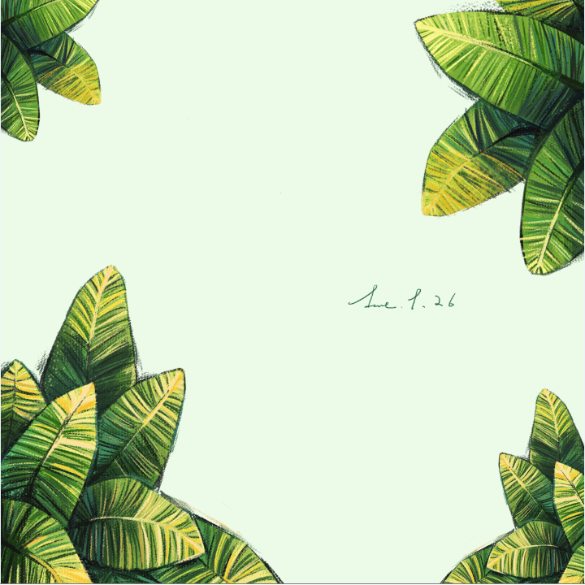

当鼠标放置于缩略图之上，缩略图会迅速变大。注意，缩略图的变大是瞬间实现的。
transition的作用在于，指定状态变化所需要的时间。transition-duration
transition-property: height
transition-delay：让height先发生变化，等结束以后，再让width发生变化，也就是延迟（delay）2秒。
delay的真正意义在于，它指定了动画发生的顺序，使得多个不同的transition可以连在一起，形成复杂效果。
transition-timing-function：transition的状态变化速度
ease: 逐渐放慢
liner：匀速
ease-in：加速
ease-out：减速
ease-in-out
cubic-bezier
test